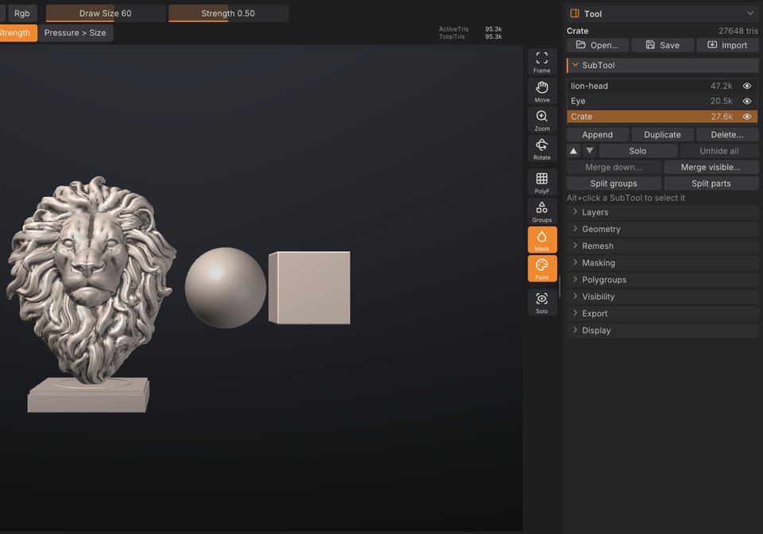

SubTools
A scene in SculptForge can hold several separate meshes, called SubTools, just as in ZBrush: a body, eyes, teeth, a helmet and a sword can each live in their own SubTool. This chapter covers the SubTool list, selecting, adding, hiding, reordering, merging and splitting SubTools, and how they travel through files.
How SubTools work#
- Only the active SubTool is sculpted, painted, masked or changed by a command. The others are drawn slightly darker and greyer so you can see which one you are working on.
- Each SubTool keeps its own mesh, mask, polypaint, polygroups, hidden faces, UVs and sculpt layers.
- Each SubTool has its own undo history. Ctrl+Z undoes the last change in the active SubTool, and switching SubTools doesn't lose the history of the others.
- Adding, deleting, reordering, merging and splitting SubTools are not undoable, as in ZBrush. Merges and deletes ask for confirmation first.
-
The title strip shows the active SubTool and its place in the list, for example
SubTool Helmet (2/5).
The SubTool list#
The list is in Tool > SubTool, which is open in the right tray by default.


Each row shows the SubTool's name, its triangle count and an eye.
| To | Do this |
|---|---|
| Select a SubTool | Click its row, or Alt+click it in the viewport |
| Rename it | Double-click the row (or right-click > Rename), type, press Enter |
| Hide or show it | Click the eye at the end of the row |
| Duplicate or delete it | Right-click the row > Duplicate or Delete... |
| See its vertex and triangle counts | Point at the row for a moment |
The list shows six rows and scrolls when there are more. Names are kept unique: renaming a SubTool to a name that is already taken adds a number.
Selecting a hidden SubTool shows it again, because you can't sculpt what you can't see.
Select a SubTool in the viewport#
Hold Alt and click another SubTool on the canvas. It becomes the active one and the list scrolls to it.
Alt+click only selects when you click a SubTool other than the active one and release without moving. If you drag instead, Alt keeps its usual meaning: an inverted stroke on the active SubTool, or a pan when you start off the model.
Add a SubTool#
Click Append and choose:
- Sphere, Cube or Plane: a new primitive placed beside the visible model (to the right, on +X), sized to about a third of the largest visible SubTool.
-
From file...: a model (
.obj,.fbx,.glb,.gltf,.ply,.stl,.GoZ,.usda,.usd,.usdz) or a project (.sfproj). A file with several objects adds one SubTool per object.
The new SubTool becomes the active one.
You can also add files as SubTools from elsewhere:
- Import in the Tool palette header (or File > Import) adds a model file as a new SubTool.
- In the LightBox Tool tab, Shift+double-click a model, or right-click it and choose Append as SubTool.
Show, hide and solo#
- The eye on each row shows or hides that SubTool.
- Solo shows only the active SubTool. Click it again to bring the others back. The Solo button on the right shelf does the same.
- Unhide all shows every SubTool.
Hidden SubTools aren't drawn, can't be selected with Alt+click, and are left out of exports.
Reorder SubTools#
The up and down arrow buttons under the list move the active SubTool one place up or down. The order matters for Merge down and is the order objects are written to files.
Merge SubTools#
- Merge down... merges the active SubTool with the one below it.
-
Merge visible... merges every visible SubTool into one new SubTool called
Merged. Hidden SubTools stay as they are.
Merging keeps every attribute, gives each original mesh its own polygroups (so you can split them again later) and matches sculpt layers by name. The merged SubTool starts with an empty undo history. A SubTool with subdivision levels is merged (or split) at the level it is on, which becomes the base of the result; the status line names the SubTools that lost their levels.
Painted textures are kept too: the merged SubTool gets new Auto UVs and one texture, the size of the largest, holding each part's paint exactly (texture layers are flattened; parts without a texture are white). On big meshes the Auto UV takes a while. Scripts can skip it with keep_texture=false, which drops the textures.
Split a SubTool#
- Split groups makes one SubTool per polygroup. It is available when the active SubTool has more than one polygroup.
- Split parts makes one SubTool per disconnected piece, largest first.
Both replace the active SubTool with the pieces. Because a merge keeps each original mesh in its own polygroup, Split groups undoes a merge.
Delete a SubTool#
Click Delete... (or right-click a row > Delete...) and confirm. The last SubTool can't be deleted, and a delete can't be undone.
SubTools in files#
| Format | What happens to SubTools |
|---|---|
Project (.sfproj) | Every SubTool is saved with its name, visibility, attributes, layers and active layer |
| OBJ | Each visible SubTool is an o object; on import, o objects become SubTools and g groups become polygroups |
| glTF / GLB | One node and mesh per visible SubTool, both ways |
| FBX | One model per visible SubTool (with LODs, an LOD group each), both ways |
| USD | One Mesh prim per visible SubTool, both ways |
| GoZ | Each visible SubTool is sent to ZBrush as its own SubTool |
| PLY, STL, splat conversion | The visible SubTools are merged into one mesh |
Opening a multi-object file replaces the scene with one SubTool per object. See Exporting for the details of each format.
Scripting#
Every SubTool action is a command, so you can use them in the console, scripts, Python and MCP agents. SubTools are addressed by index (0 is the top of the list) or name; without either, the active one is used.
| Command | What it does |
|---|---|
subtool_list | List the SubTools |
subtool_select index=1 | Make a SubTool active |
subtool_append type=cube | Add a primitive (sphere, cube, plane); path= adds a file; size= (0.05-2, default 0.35) |
subtool_duplicate | Copy a SubTool |
subtool_delete name=Helmet | Delete a SubTool |
subtool_rename to=Body | Rename a SubTool |
subtool_visibility visible=false | Show or hide (toggles when visible is left out) |
subtool_solo / subtool_show_all | Solo the active SubTool / show every SubTool |
subtool_move direction=up | Move a SubTool up or down the list |
subtool_merge_down / subtool_merge_visible | Merge |
subtool_split_groups / subtool_split_parts | Split |
subtool_append type=sphere name=EyeL size=0.12; subtool_duplicate; subtool_rename to=EyeRSee also#
- Polygroups and visibility: hide parts of one SubTool
- Sculpt layers and blend shapes: layers belong to each SubTool
- Exporting: how SubTools reach other applications
- Projects, autosave and QuickSave